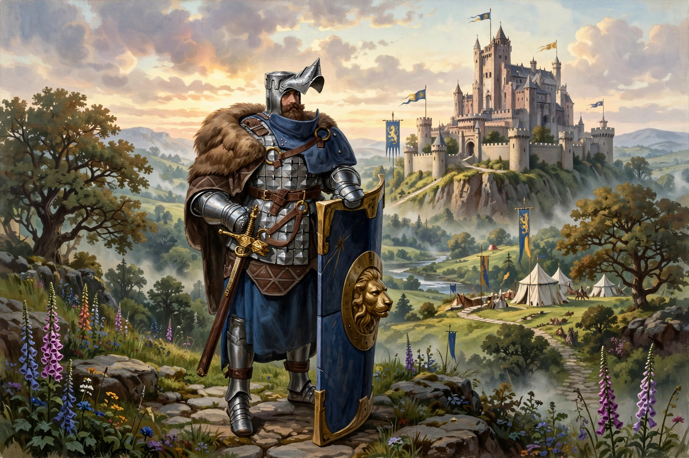

Sir Lancelot du Lac is a figure in British folklore and Arthurian legend, the most famous knight of King Arthur's Round Table, renowned as its greatest swordsman and as the lover of Queen Guinevere.

| Occupation | Knight of the Round Table |
|---|---|
| Family | King Ban (father), Elaine of Benoic (mother) |
| Children | Galahad |
| First appearance | Chrétien de Troyes, 12th century |
Lancelot first appears in Chrétien de Troyes' poems in the late 12th century, fully developed in Lancelot, the Knight of the Cart, where he rescues Guinevere from Meleagant. Raised by the Lady of the Lake, he joins Arthur's court, performs countless feats, and fathers Galahad with Elaine of Corbenic. His adulterous love for Guinevere, though presented as courtly devotion, ultimately splits the Round Table: exposed by Mordred and Agravaine, Lancelot's rescue of the queen from execution kills fellow knights and triggers civil war.
The prose Lancelot-Grail cycle and Malory's Le Morte d'Arthur cemented his central role. He recurs in modern retellings from Tennyson's Idylls of the King to T. H. White's The Once and Future King and film and stage adaptations.